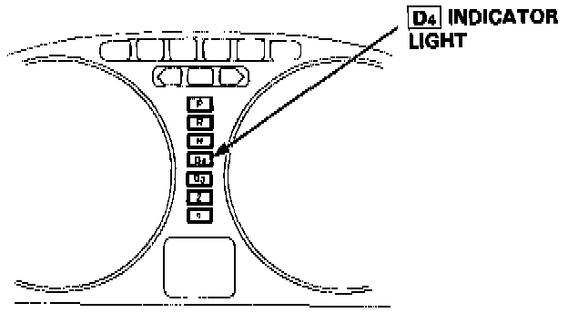
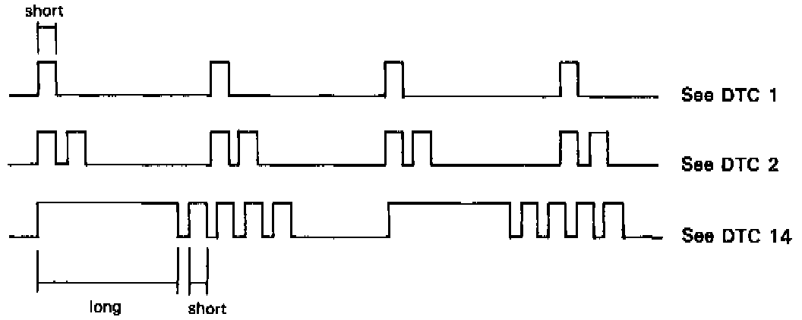
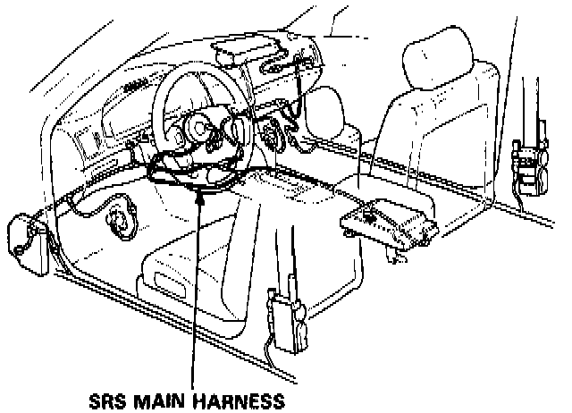
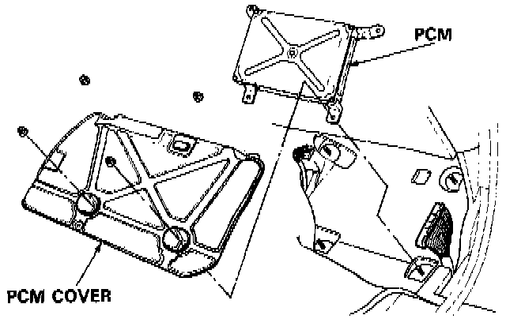
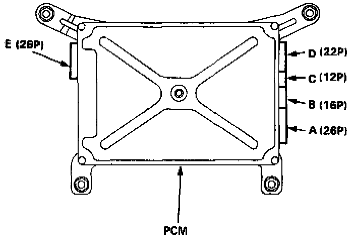
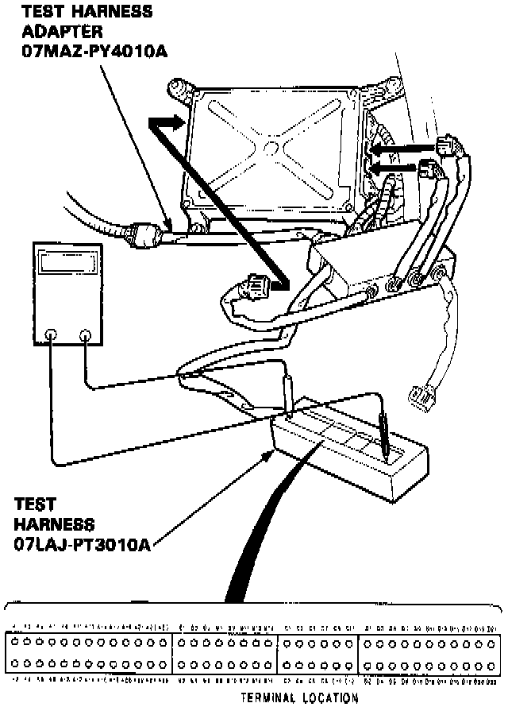

Initial Inspection and Diagnostic Overview
TROUBLE CODE DISPLAYWhen the Powertrain Control Module (PCM) senses an abnormality in the input or output systems, the [D4] indicator light in the gauge assembly will blink. However, when the Service Check Connector (located on the PCM cover) is connected with a jumper wire, the [D4] indicator light will blink the Diagnostic Trouble Code (DTC) when the ignition switch is turned on.


When the [D4] indicator light has been reported on, connect the two terminals of the Service Check Connector together. Then turn on the ignition switch and observe the [D4] indicator light.

Codes 1 through 9 are indicated by individual short blinks, codes 10 through 17 are indicated by a series of long and short blinks. One long blink equals 10 short blinks. Add the long and short blinks together to determine the code. After determining the code, refer to the electrical system Symptom-to-Component Chart.
Some PGM-FI problems will also make the [D4] indicator light come on. After repairing the PGM-FI system, disconnect the No. 15: ACG (S) fuse (7.5 A) in the under-dash fuse box for more than 10 seconds to reset the PCM memory.
NOTE:
- PGM-FI system
The PGM-FI system on this model is a sequential multiport fuel injection system.
- The [D4] indicator light may come on, indicating a system problem, when, in fact, there is a poor or intermittent electrical connection. First, check the electrical connections, clean or repair if necessary.
- If the electrical readings are not as specified when using the test harness, check the test harness connection before proceeding.

CAUTION:
- All SRS wiring harnesses are covered with yellow outer insulation.
- Before disconnecting any part of the SRS wire harness, install the short connectors.
- Replace the entire affected SRS harness assembly if it has an open circuit or damaged wiring.
If the inspection for a particular failure code requires the use of Test Harness (O7LAJ-PT3O1OA):
1. Remove the right door sill molding and the small cover on the right kick panel, and pull the carpet back to expose the PCM.

2. Remove the PCM cover.
3. Disconnect the connector from the radiator fan control module.
4. Connect the Test Harness Adapter to the test harness.

5. Disconnect the appropriate Connector (E:26P, B:16P or C:12P) and connect it to the Test Harness.

NOTE:
- Modify the Test Harness (07LAJ-PT301 0A) connector by removing the bar at both right and left ends with an X-acto knife from the A (26P) male connector block.
NOTE:
- The A section of the Test Harness corresponds to the E (26P) connector, while connecting to test the Test Harness Adapter.
- Unless otherwise noted, use only the Digital Multimeter, commercially available or KS-AHM-32-003, for testing.
PCM RESET PROCEDURE
1. Turn the ignition switch off.

2. Remove the No. 15: ACG(s) fuse (7.5 A) from the under-dash fuse/relay box for 10 seconds to reset the PCM.
NOTE:
- Disconnecting the No.15 fuse also cancels the power seat setting.
FINAL PROCEDURE
NOTE:
- This procedure must be done after any troubleshooting.
1. Remove the Service Check Connector (2P).
2. Reset the PCM.